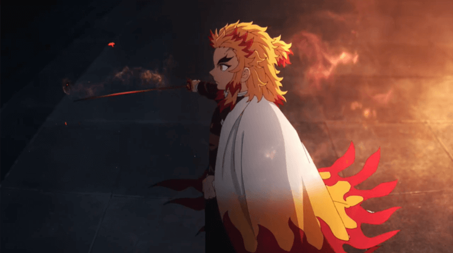
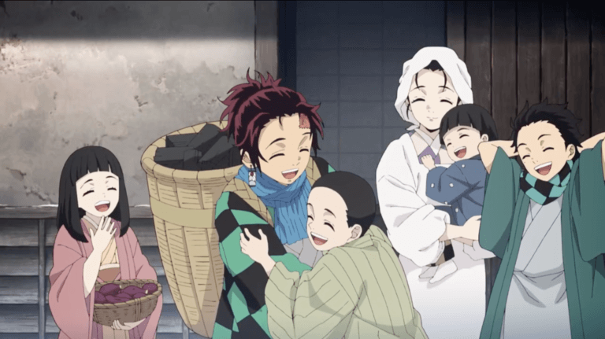
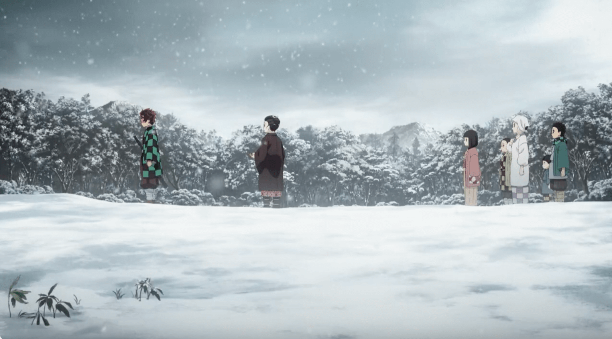
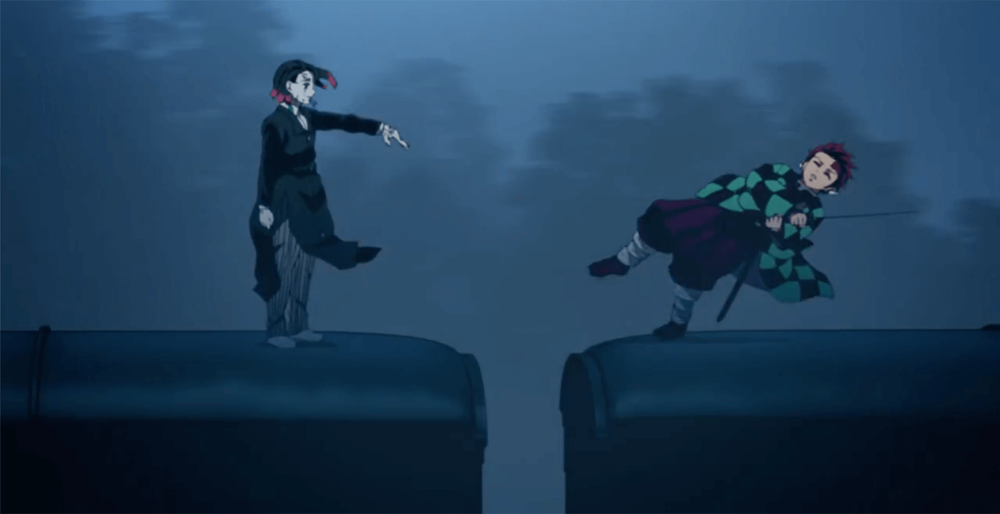
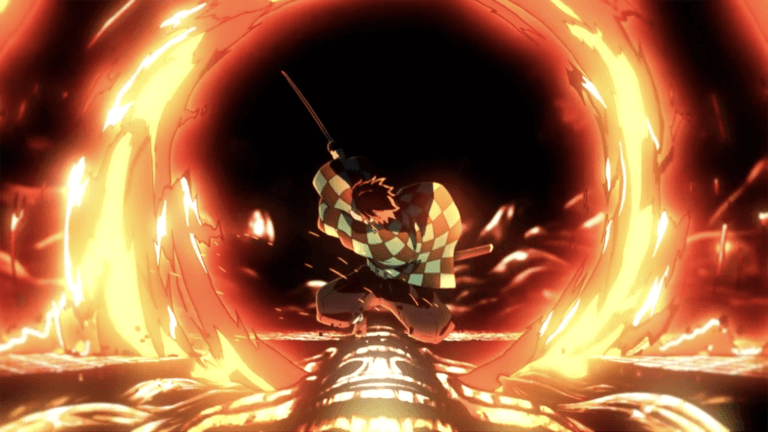
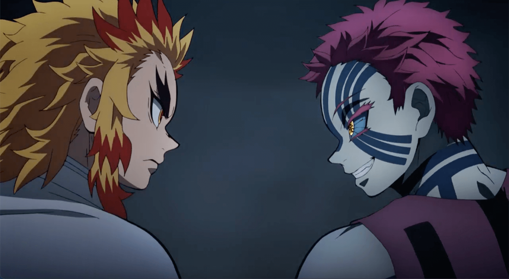
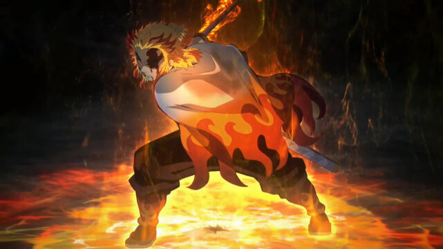

| 集數 |
片名 |
劇情內容 |
|
1
|
炎柱 煉獄杏壽郎
|
-
畫面一開始是列車上，列車長在車上被鬼殺害。接著畫面跳到正在吃拉麵的炎柱身上，和另外一名隊員聊著昨天的任務，並從老闆那邊得知鐵路沿線出現殺人魔，且聽說車上數十名乘客全部失蹤。於是，炎柱和隊員動身前往列車長被殺害的車站。
車站有個賣便當的小女孩和她的外婆，炎柱直接上前詢問有沒有看到鬼，讓小女孩感到相當奇怪，炎柱還被女孩用麵包砸，最後誤會解開，炎柱還買了全部的便當，並與隊員分開，獨自一人搭上列車，準備前往停放無限列車的車庫，上了車才知道無限列車被運往維修中心，就馬上跳車了（便當竟然還帶著）。
炎柱偽裝成送便當的人，順利混進列車維修中心，並得知明天晚上無限列車會重新發車，突然傳來一聲尖叫，原來是有隻挾持人質的鬼，經過了一番對話，炎柱成功解救人質，但是鬼卻逃走，並說要前往車站殺害販賣火車便當的人。
正當小女孩被鬼抓住的時候，炎柱也順利趕到車站，鬼又回頭去找賣便當的外婆，炎柱也瞬間趕到並砍下鬼的頭。看著炎柱的動作，外婆想起過往的回憶，原來他們之前也被炎柱救過，是炎柱的爸爸拯救了小女孩的媽媽。
炎柱認為這個鬼只是混淆視聽用的而已，應該有更強大的鬼躲在這裡，於是他決定搭上晚上出發的無限列車。傍晚炎柱抵達車站，遇到賣便當的外婆和小女孩，又跟他們買了一堆便當，並說會把他們的故事告訴父親（沒有以後了啦QQ），就接上炭治郎一行人上火車的畫面。

|
|
2
|
沉睡
|
-
炭治郎一行人在車上尋找炎柱，炎柱一邊吃著便當，一邊大喊好吃，大家總算相遇了！炭治郎也趁機向炎柱詢問火之神神樂的事情，沒想到炎柱完全沒聽過，並說要炭治郎成為他的繼子。
列車長來剪票，剪票結束就出現了鬼，炎柱以超快的速度解決他，後來又出現一隻，順利解決後，眾人沈浸在歡樂的氛圍裡，沒想到其實從剪票結束後，他們就一直在睡覺了。
列車長請求一隻鬼手讓他做個美夢，其他還有人在一旁等待指示，要準備和炭治郎他們進行夢境連結。炭治郎的夢回到家人被殺害之前，他賣完木炭走回家，家人都在迎接他，看到弟弟妹妹的炭治郎，抱著他們痛哭。
下弦之一魘夢在列車上解釋，只要破壞人們的精神核心，就能徹底摧毀那個人。而那些與鬼合謀的人，也前往炭治郎所在的車廂，進入他們的夢境中。畫面回到炭治郎的夢境，他快樂地在家生活，已經想不起來自己的任務了。

|
|
3
|
如果是真的…
|
-
善逸夢到他和禰豆子約會；伊之助夢到炭治郎、善逸和禰豆子變成他的手下，一群人在洞穴裡面探險；炎柱夢到他回到家，正要和父親說他成為炎柱的事，雖然遭到父親冷言冷語，卻還是非常正向地鼓勵弟弟千壽郎。
入侵夢境的人被交代要前往夢的盡頭，尋找精神核心並將其破壞，如此一來夢境的主人便會成為廢人。潛入炎柱夢境的人來到他的無意識領域，在要破壞炎柱的精神核心時，被現實中的炎柱一把抓住而無法動彈。
畫面回到炭治郎的夢境，雖然潛意識似乎還記得現實，但是怎麼也想不起來，後來終於想起來這是夢，卻不知道該怎麼離開。現實中的禰豆子因為撞了炭治郎的頭，導致自己的額頭受傷，而激發了血鬼術，夢境裡面的炭治郎感覺到之後，便逐漸清醒，原本的便服也變回鬼殺隊隊服。
一家人追著奪門而出的炭治郎，炭治郎想著要不是因為鬼，他應該就會快樂地和家人生活在一起，但是他最終還是下定決心跑離家人。另一方面，潛入炭治郎夢境的人也找到了他的無意識領域，準備前去破壞精神核心。
炭治郎仍困在夢境裡，他的父親突然出現，告訴他該砍的東西已經在這裡了。於是，炭治郎舉起日輪刀自刎。

|
|
4
|
侮辱
|
-
潛入炭治郎無意識領域的人，被炭治郎心靈的化身引路，帶著他找到炭治郎的精神核心，同時間炭治郎正在甦醒，於是那個人拉著炭治其中一個化身離開夢境。
另一方面，潛入伊之助無意識領域的人，在像是洞穴的地方爬著，沒想到伊之助卻出現在此處，還追著潛入的人跑；潛入善逸無意識領域的人，遇到拿著大剪刀的善逸，並表示這裡只有禰豆子可以來，嚇得潛入者四處逃跑。
醒來的炭治郎拜託禰豆子燒斷大家的繩子，但其他人仍然沒有醒來，而醒來的潛入者聯合攻擊炭治郎，潛入炭治郎夢境的人，因為被炭治郎的內心世界感化，變得沒有攻擊性。炭治郎將其他潛入者打昏後，就拉著禰豆子前去尋找鬼。
炭治郎跑到列車上找到魘夢，魘夢不斷地讓炭治郎睡著，炭治郎總是馬上自刎醒來，魘夢讓炭治郎做了被家人痛罵的夢，讓炭治郎非常憤怒，最後成功砍下魘夢的頭，但是魘夢的身體卻沒有化成灰燼，甚至仍然活著，原來魘夢早已和無限列車融合，還說乘客全部都是他的囊中物。
幸好，在這個緊急的時刻，伊之助醒來支援了。

|
|
5
|
向前
|
-
魘夢開始對列車乘客伸出魔爪，伊之助斬斷不停長出來的觸手，整輛列車變得到處都是魘夢的血肉，且不管怎麼砍都會再生。禰豆子也加入戰局，但是觸手相當難對付，禰豆子不小心被抓住，幸好，善逸即時醒來（其實還在睡覺？）幫助禰豆子。
炎柱也醒來幫忙，表示自己負責保護五節車廂的乘客，善逸和禰豆子保護剩下的三節，而炭治郎和伊之助則負責尋找鬼的脖子。伊之助已經找到魘夢的弱點，兩人趕緊前往火車頭，朝著要害砍下去，卻非常快就癒合，完全無法砍斷魘夢的脖子。
在兩人持續進攻的同時，魘夢也不斷地出招想讓兩人睡著，炭治郎不斷地睡著，一直到分不清楚現實和夢境，差點砍了現實世界的自己才被伊之助叫住，原來因為伊之助戴著頭套，鬼無法知道伊之助看著哪裡，因此無法催眠他。沒想到此時，列車長竟突然衝出來攻擊，炭治郎幫伊之助擋了一刀，兩人也才終於成功砍斷魘夢的頸脖。
列車因為魘夢的陣亡，造成強烈的衝擊使列車嚴重脫軌。

|
|
6
|
猗窩座
|
-
列車經過猛烈的撞擊後，終於停下來，而炭治郎飛出車外，腹部的傷仍繼續留著血，炎柱教導他使用呼吸法止血，並表示乘客雖有受傷，但是都無生命危險。
突然一聲巨響，上弦之三猗窩座現身，一出現就想殺掉被他視為弱者的炭治郎，幸好被炎柱阻止。猗窩座想招攬炎柱成為鬼，當然是被炎柱一口拒絕，兩人便開始大打出手。
剛開始兩人打得平分秋色，炎柱試著拉近兩人的距離，卻被猗窩座一腳踢飛，體力也逐漸不支，而猗窩座卻還是毫髮無傷，炭治郎等人僅能在一旁觀戰並自歎不如。
不管炎柱怎麼攻擊，猗窩座的傷勢總是馬上恢復，戰鬥過程中，炎柱失去一隻眼睛，肋骨似乎也被揍斷，身上不斷地流著血。

|
|
7
|
燃燒心靈
|
-
猗窩座仍不斷地希望重傷的炎柱變成鬼，並表示就算拼盡全力也不可能打敗自己，不過炎柱沒有輕言放棄，仍然打算繼續進攻。炎柱使用炎之呼吸奧義「煉獄」，看似對猗窩座造成很大的傷害，沒想到對方還是瞬間痊癒，並且一拳貫穿炎柱。
炎柱回想起小時候媽媽對他說過的話：為何會生的比別人強壯呢？那是因為要用來幫助比他弱小的人。回憶完的炎柱，醒來馬上往猗窩座的脖子砍去，這時候也快天亮了，炎柱將猗窩座困著不讓他逃走。
猗窩座選擇自斷雙手、脖子上還插著炎柱的刀刃逃往樹林，炭治郎則在後面追趕猗窩座，但是完全追不上，只能憤怒地丟出手中的劍去攻擊。
炎柱向炭治郎交代了遺言，表示自己想起與火之神神樂有關的線索，可以前往他出生的家看看，並希望炭治郎能幫他轉告遺言。在彌留之際，炎柱看見母親的身影，炎柱向母親詢問自己是否都有做到，母親表示他做得非常好，最後，炎柱含笑而終。
面對炎柱的死亡，炭治郎一行人懊悔的大哭，只能下定決心更加努力地訓練，而烏鴉則將炎柱的死訊傳給位於各處的柱們。

|